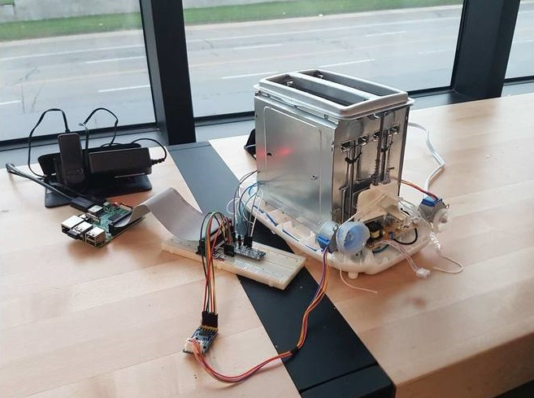
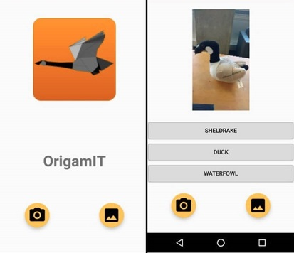
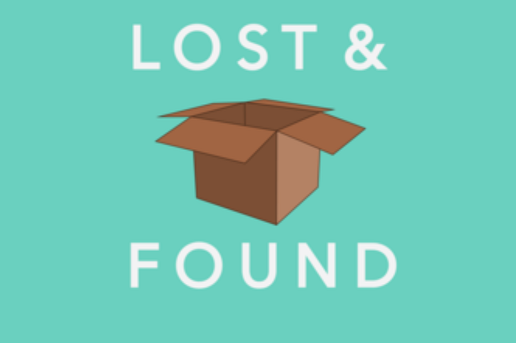
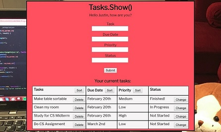

Justin Goping


Hello there!
My name is Justin Goping, a second-year Computer Science student at the University of Waterloo. If you would like to reach out to me, my email address is jgoping@gmail.com
Projects
Golf Tournament AR

Focus Toastus
OrigamIT
Lost & Found
WikiNotes
Forest Flips

The Search For DK
To-Do List App
Turing Hero
Golf Tournament AR
iOS app which incorporates augmented reality into the golf tournament spectating experience. The app displays the players and hole locations around, which can be clicked on to receive additional stats. A simple Android app was built to send real-time GPS coordinates to a Flask server so that the main app can capture player movement.
Forest Flips
3D physics-based driving game developed in Unity. The player needs to score as many points as possible by doing stunts such as flips and rail slides. Points for a flip are determined by the angle the car has rotated mid-air and the horizontal speed of the car. Not properly landing a stunt results in losing the points for it, so precision is key.
Music
Ever since I was 5 years old, music has been a large part of my life. I mainly play piano, guitar, and drums, and I enjoy playing music from a wide variety of genres. Two of my favourite genres would be jazz and progressive metal. Here are some videos showcasing my playing:

Jazz

Progressive Metal
Experience
TribalScale Software Engineer | January 2019 - April 2019
For my second co-op term at Waterloo, I worked at the software company TribalScale in Toronto.
- Redesigned a Spring Boot backend to transform traditional endpoints into one endpoint with GraphQL support in order to increase customization for the different clients
- Developed features for an Android FireTV family radio app which included blocking content, creating a settings screen, and adding many other small features up until it was released
- Created a deeplink from the regular radio app to the family one and learned about deploying it to the market
- Transformed designs into a functional website using React and Redux to give an old project a modern redesign
Finastra Software Developer | May 2018 - August 2018
For my first co-op term at Waterloo, I worked at the Fintech company Finastra (formerly D+H).
- Worked on an Agile software development team on a Web Application used for ordering cheques
- Transferred data from SQL Database to the browser by building the model and controller in .NET Core and sending it to the Angular application to display it
- Implemented new security features into the front end using RouteGuards and backend using policies and handlers so that features are protected from unauthorized users
- Wrote the creation, insertion, and deletion scripts with required documentation to set up and deploy SQL tables
Laborie Software Engineer | July 2017 - August 2017
Over the Summer of 2017 I worked a 2-month internship at the medical company Laborie.
- Sourced and evaluated various java-compatible 3D plotting libraries to use for a new acoustic measurement device to make the data easier to interpret for doctors
- Implemented the Jzy3d library into a proof of concept prototype which included integrating the new real-time 3D rendering functions
- Built and optimized efficiency of real-time weighted moving average filter with user-adjustable controls using a queue to prevent delay in the graphics
Robotics Teacher | September 2016 - May 2017
Through my Grade 12 year I worked as a teacher at Ebots Robotics in Oakville.
- Gained leadership skills through role as a teacher for children from grades 2-3
- Developed communication skills by teaching simple machines through the usage of interesting Lego builds
Accompaniment Musician | September 2016 - April 2017
I've been playing instruments since I was 5 years old, and I have been able to get a few jobs playing music.
- Bass player in an accompaniment band, which played for the piano classes throughout the music school for the students to play along to
- Played gigs around Ontario, such as a New Year’s celebration in Scarborough for the Mayor of Toronto
Skills
- Languages: JavaScript, C/C++, Python, Kotlin, C#, Octave
- Frameworks: Angular, ASP.NET Core, React
- Databases: Oracle, MongoDB
- Relevant Knowledge: Git, VSTS, Agile/Scrum Methodology, Android Studio, HTML, CSS